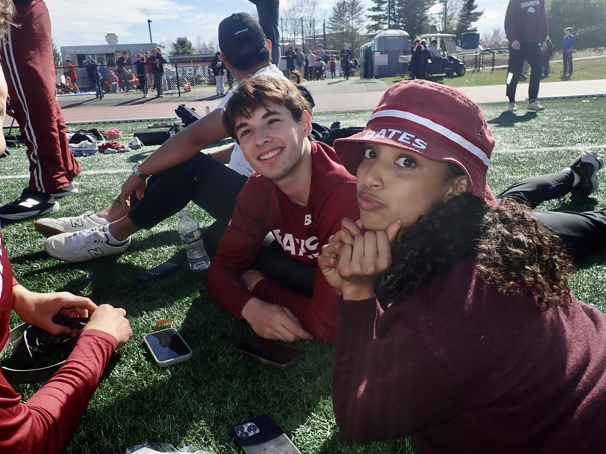
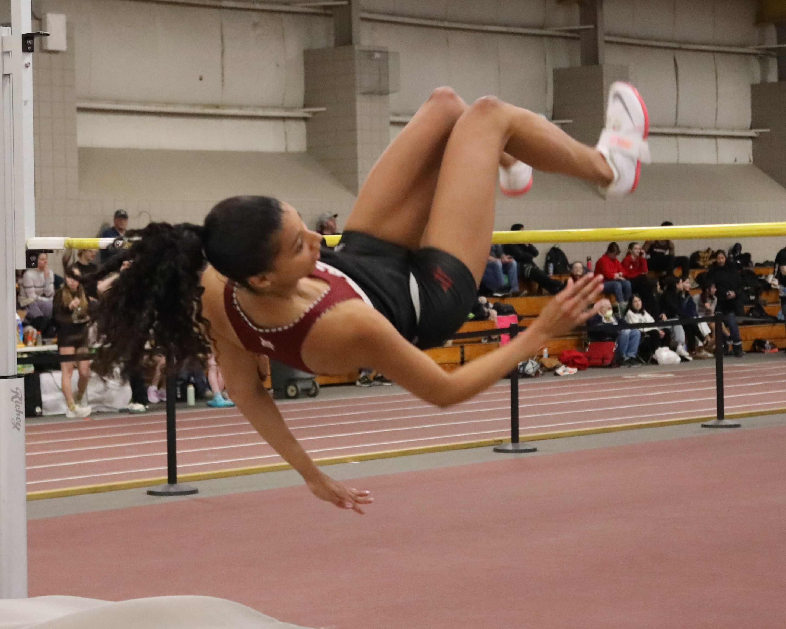

Welcome to my final project. Below, you can explore the evolution of my manifesto through its three distinct phases, combining my raw text with the final imagery.
Type out the raw text or ideas for your first version right here. You can make this as long as you want!

Here is where you discuss what changed in the second version, along with the raw text for this stage.

This is the final text of my manifesto, representing the completed vision.